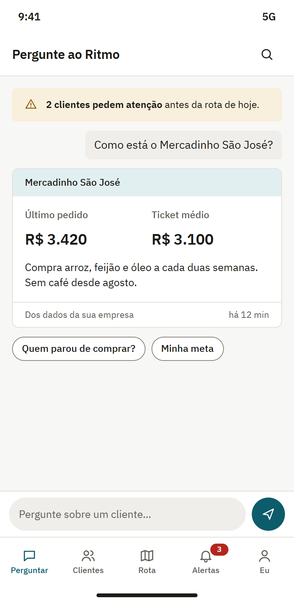
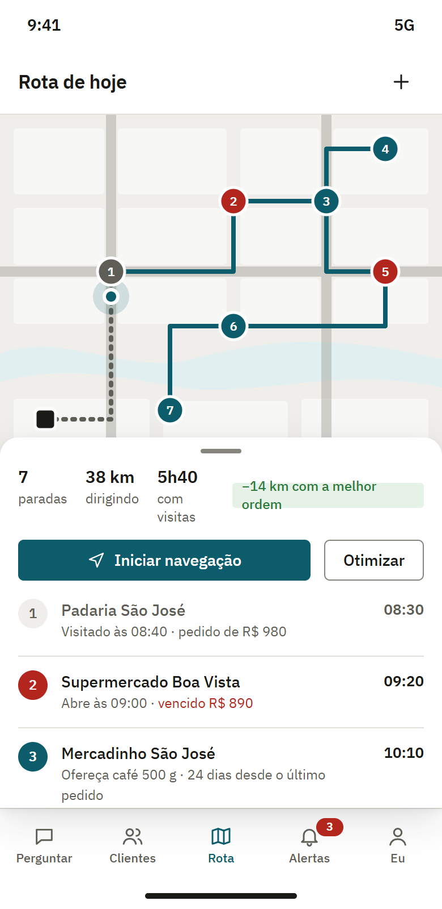
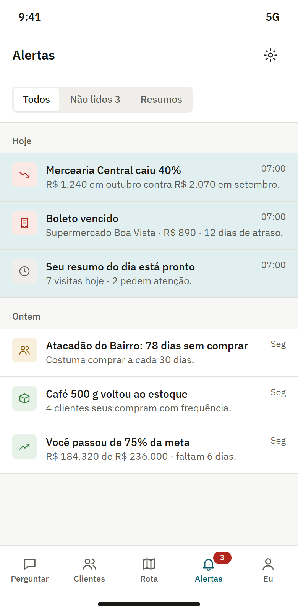
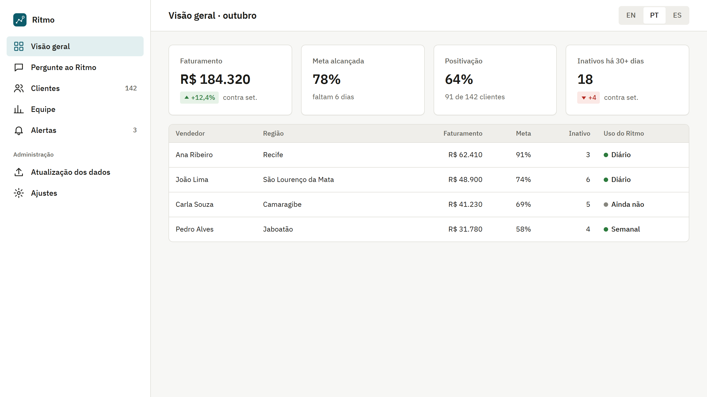
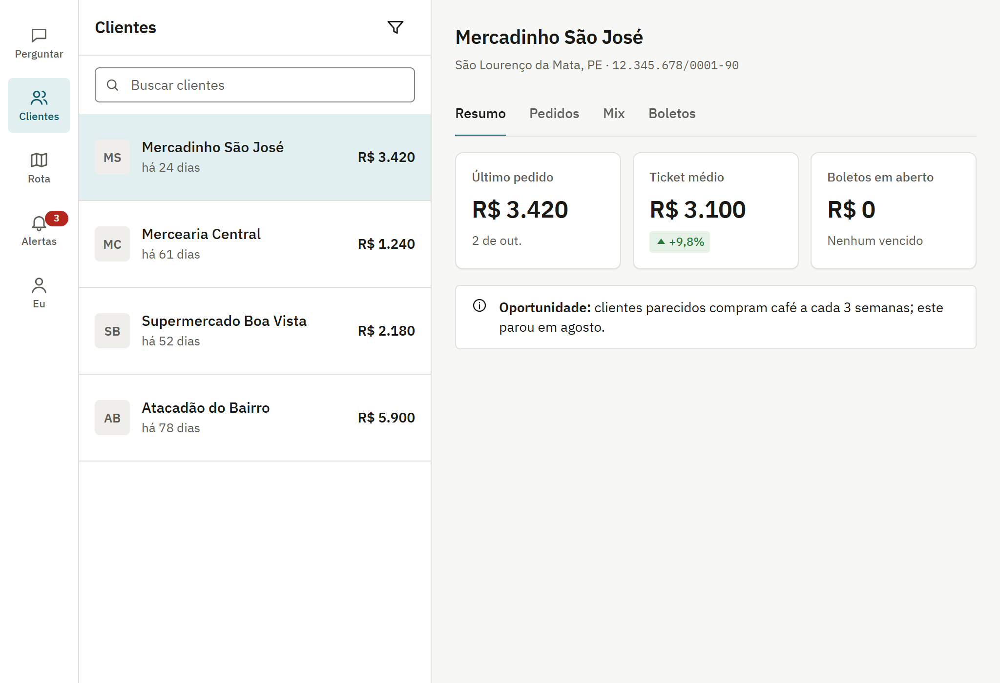
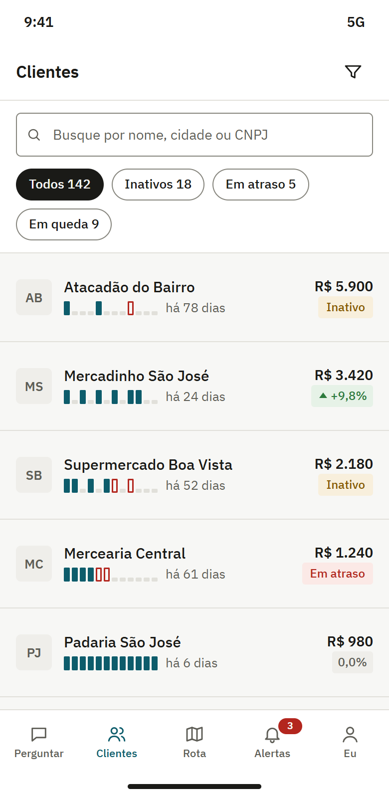
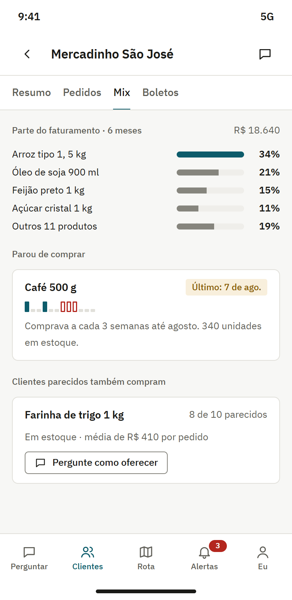
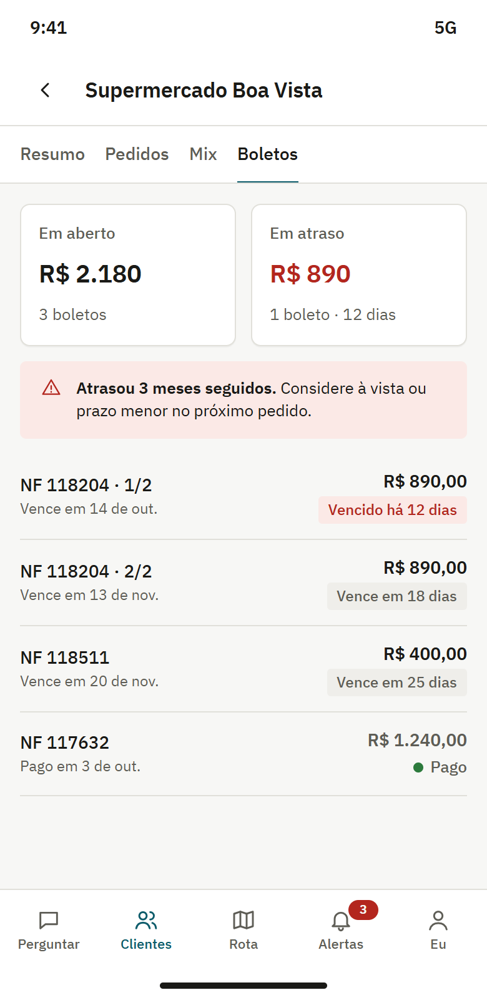
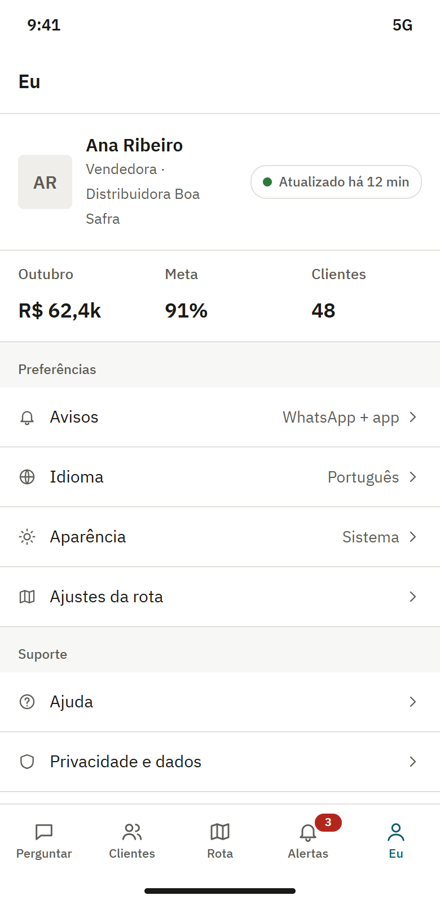

Em desenvolvimento, buscando empresas piloto
O copiloto de vendas de quem vende na rua
Chegue em cada visita sabendo o que vender. O Ritmo reúne os dados da sua empresa e responde na hora, pelo WhatsApp, pelo app ou pelo computador, com alertas e a rota do dia.
Feito para indústrias, distribuidoras, representantes autônomos e vendedores externos
- Números do sistema da sua empresa, com a fonte e a hora
- Só consulta: não altera nada no seu sistema
- Acordo de proteção de dados (LGPD) antes de qualquer dado real

Funciona onde a sua equipe já está:
- Celular
- Computador
A informação existe, mas não chega a quem está na rua
Antes da visita
Você chega no cliente sem saber o último pedido, o que ele parou de comprar ou se tem boleto vencido.
Na rota
Uma consulta simples vira ligação ou áudio para o escritório, e a resposta demora a chegar.
No fim do mês
O gestor só vê o resultado quando já é tarde para agir, e tem cliente que para de comprar sem ninguém notar.
Para quem é
Indústrias
Que vendem por meio de representantes e precisam que a informação chegue até eles.
Distribuidoras
Com equipes na rua e uma carteira grande de clientes para visitar.
Representantes autônomos
Que atendem muitos clientes sozinhos e precisam da informação na hora, sem ligar para o escritório.
Vendedores externos e gestores
Que acompanham a meta e a positivação e querem agir antes do fim do mês.
Como funciona
O produto está em construção. É assim que ele foi desenhado para funcionar.
Pergunte como falaria com um colega
A resposta traz o número, de onde ele veio e quando foi atualizado.
- Quem não compra há 30 dias?
- Tem boleto vencido?
- Quanto falta para a minha meta?
Rota do dia
Suas visitas na melhor ordem, calculada pelo Ritmo, e um toque para abrir a próxima parada no Google Maps ou no Waze.

Alertas antes do problema
Um aviso quando um cliente sai do ritmo de compra, cai de volume ou tem boleto vencido, no WhatsApp ou no celular.
Exemplo: 12 semanas de compras de um cliente.Nas últimas 2, era para ter comprado e não comprou.

Em toda tela
Celular, tablet, computador e WhatsApp, com os mesmos números em todos.






Telas ilustrativas, com empresas e números fictícios. O produto ainda está em construção, e o resultado final pode mudar.
Por que confiar
Estes são requisitos do projeto, testados à medida que o produto é construído. O Ritmo ainda não tem certificações.
O número não vem da IA
A inteligência artificial entende a pergunta e escreve a frase. O Ritmo busca o número direto no sistema da sua empresa (o ERP) e mostra de onde veio e quando foi atualizado.
Só consulta na primeira versão
O Ritmo lê os dados. Ele não cria, não altera e não apaga nada no sistema da sua empresa.
Cada um vê só o que é seu
Cada empresa vê só os próprios dados, e cada vendedor vê só a própria carteira.
Entrar sem senha
Você entra com a digital, o rosto ou um código que chega no celular. Não há senha para vazar ou esquecer.
Dados protegidos
Seus dados vão e ficam guardados protegidos (criptografados).
LGPD, a lei de proteção de dados
Sua empresa decide sobre os dados, e assinamos um acordo de proteção de dados antes de receber qualquer informação real. Parte do serviço usa empresas de fora do Brasil, listadas nesse acordo.
Sem rastrear o trajeto
A localização é usada só com a rota aberta. O Ritmo registra a visita, com o cliente e o horário, mas não grava o caminho percorrido.
Como funciona o piloto
Em que pé está: em desenvolvimento, buscando empresas que queiram testar e ajudar a moldar o produto.
Conversa
Entendemos como sua equipe vende e quais informações mais fazem falta.
Acordo de proteção de dados
Assinamos o acordo antes de qualquer dado real.
Teste com poucos usuários
Alguns vendedores usam o Ritmo no dia a dia.
Vocês ajudam a moldar
O retorno da sua equipe define o que melhorar no produto.
Perguntas frequentes
Não achou sua dúvida? Fale com a gente.
Preciso trocar de sistema?
Não. O Ritmo lê os dados do sistema que sua empresa já usa e não altera nada nele.
De onde vêm os números?
Do sistema da sua empresa. A inteligência artificial só entende a pergunta e escreve a frase, e cada resposta mostra de onde veio o número e quando foi atualizado.
O Ritmo rastreia o vendedor?
Não grava o caminho percorrido. A localização é usada só com a rota aberta, e o Ritmo registra a visita, com o cliente e o horário.
É seguro?
Segurança é requisito do projeto: cada empresa vê só os próprios dados, cada vendedor só a própria carteira, sem senha e com os dados criptografados. Assinamos um acordo de proteção de dados antes de receber qualquer dado real. O Ritmo ainda está em construção e não tem certificações.
Quanto custa?
O preço está em definição com as empresas piloto.
Quem somos
O Ritmo é da Marco Zero Labs, um estúdio de software de Pernambuco. O nome vem do Marco Zero do Recife, de onde as distâncias começam a ser medidas.
- Caio
- Ewerton
- Ryan
Quer testar o Ritmo na sua empresa?
Conte como sua equipe vende e qual sistema vocês usam. A gente responde.
Ou escreva direto para marcozerolabs@gmail.com.